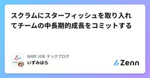
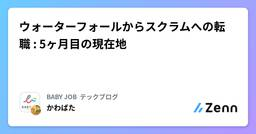
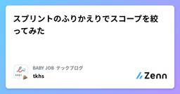
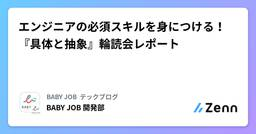
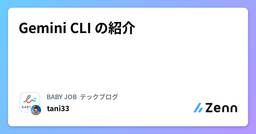
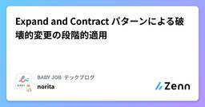
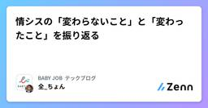
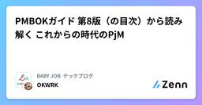

BABY JOB テックブログのフィード
https://zenn.dev/p/babyjob
私たち BABY JOB は、子育てを取り巻く社会のあり方を変え、「すべての人が子育てを楽しいと思える社会」の実現を目指すスタートアップ企業です。圧倒的なぬくもりと当事者意識をもって、子どもと向き合う時間、そして心のゆとりが生まれるサービスを創出します。https://baby-
フィード

スクラムにスターフィッシュを取り入れてチームの中長期的成長をコミットする
BABY JOB テックブログのフィード
!この記事は BABY JOB Advent Calendar 2025 の 14日目の記事です。スターフィッシュというふりかえりの手法をご存知ですか？詳しい説明はよその記事に譲りますが、簡単に言うと上記のように5つのエリア「START」「STOP」「KEEP」「MORE OF」「LESS OF」に分割されたボード上でアクションを管理する手法です。本記事では私たちのチームで実際にスターフィッシュを導入して課題を解決した事例を共有します！ 当時の課題感私が今のスクラムチームに配属したとき、チームには「中長期アクション」を管理する慣習がありました。レトロスペクティブの中...
6分前

ウォーターフォールからスクラムへの転職 : 5ヶ月目の現在地
BABY JOB テックブログのフィード
!この記事は BABY JOB Advent Calendar 2025 の 13 日目の記事です。 はじめに手ぶら登園開発課 のかわばたです！私はウォーターフォールの開発を約5年経験した後、2025年7月にBABY JOBへ転職しました。本記事では、ウォーターフォール経験者がスクラムチームにジョインしてからの4ヶ月で感じたことや学んだことについて書きます！※ウォーターフォールは以降「WF」と表記します。 想定読者以下を想定読者とします。WFやスクラムの基礎知識がある人WF経験者でスクラムに興味がある人スクラムに適応しようとしているWF経験者のリアルを知りた...
1日前

スプリントのふりかえりでスコープを絞ってみた
BABY JOB テックブログのフィード
!この記事は BABY JOB Advent Calendar 2025 の 12 日目の記事です。 当時の課題感私たちのチームは、これまでスプリントのふりかえりに YWT（やったこと・わかったこと・次にやること）[1] をフォーマットとして利用してきました。以前まで使ってたフォーマット例しかし、徐々に「チームの現状にフィットしなくなってきている」という感覚を持つようになり、ふりかえりを続けていく中で次のような課題が顕在化してきました。 フォーマットがチームに合わなくなってきたTry を「無理にひねり出す」ことによる疲労と質の低下：スプリントごとに必ず Try ...
2日前

エンジニアの必須スキルを身につける！『具体と抽象』輪読会レポート
BABY JOB テックブログのフィード
!この記事は BABY JOB Advent Calendar 2025 の 11 日目の記事です。 はじめにBABY JOB株式会社の開発部の かっつん です！エンジニアとして働く中で、「具体と抽象」の重要性を感じる場面は多いのではないでしょうか？今回は、チームでその思考力を磨くために開催した『具体と抽象』の輪読会レポートをお届けします。 なぜ、この本に興味を持ったのか私自身、「常に楽しく仕事をしたい！」という思いが根底にありますが、仕事の中身を振り返ってみると具体化されすぎたタスクは、もはや「仕事」ではなく「作業」になりがちだと感じていました。手順が決まりきった作...
3日前

Gemini CLI の紹介
BABY JOB テックブログのフィード
!この記事は BABY JOB Advent Calendar 2025 の 10 日目の記事です。 1. Gemini CLI の概要 1-1. Gemini CLI とはGemini CLI は、その名のとおりターミナルから Gemini を呼び出すためのコマンドラインツールです。ブラウザやエディタの拡張を経由せず、ローカルのシェルスクリプトやビルドツールの中から直接 LLM を叩けるのが特徴です。既存のワークフローに 組み込める のが便利です。 1-2. 簡単な使用例（インタラクティブ / ノンインタラクティブ）インストール方法は割愛しますがリンクだけ置いてお...
4日前

Expand and Contract パターンによる破壊的変更の段階的適用
BABY JOB テックブログのフィード
!この記事は BABY JOB Advent Calendar 2025 の 9 日目の記事です。 1. Expand and Contract パターンとは？Expand and Contract パターン（Parallel Changeとも呼ばれる）は、システムの破壊的な変更を、ダウンタイムなしに安全に実装するための手法です。REST APIやDBスキーマなどの破壊的変更を伴う場合に有効です。このパターンは、変更を次の3つのフェーズに分けて実行します。拡張 (Expand) フェーズ古い構造を壊さずに、新しい構造をシステムに導入します。移行 (Migrate...
5日前

情シスの「変わらないこと」と「変わったこと」を振り返る
BABY JOB テックブログのフィード
!この記事は BABY JOB Advent Calendar 2025 の 8日目の記事です。 はじめにこんにちは！BABY JOB株式会社 開発部 情報システム課の全です👋今年3月よりBABY JOB株式会社への入社を機に、数年ぶりに情シス業務に携わることになりました。わずか数年の間に取り巻く環境は劇的な進化を遂げており、私はまさに現代の「浦島太郎」状態だったのです🐢それでもふと立ち止まって考えてみると、どんなに時代が変わっても「変わらない」情シスの本質やあるあるネタが存在することに懐かしさを感じました。今回は情シスの業務における「変わらないこと」と「変わったこと」...
6日前

PMBOKガイド®第8版（の目次）から読み解く これからの時代のPjM 1
1
BABY JOB テックブログのフィード
!この記事は BABY JOB Advent Calendar 2025 の 7 日目の記事です。みなさん、こんにちは！BABY JOB株式会社 開発部 手ぶら登園開発課のOKWRKです。主にプロジェクトマネージャー（以下、PjM）として、おむつサブスクのプロダクト開発に関わっています。 PMBOKについて突然ですが、皆さんは 「PMBOK（ピンボック）」 をご存知でしょうか。これは Project Management Body of Knowledge の略で、世界中のプロジェクトマネジメントのノウハウを体系化した、いわば 「プロジェクトマネジメントの世界標準の教科書...
7日前

プロポーザル駆動学習のススメ
BABY JOB テックブログのフィード
!この記事は BABY JOB Advent Calendar 2025 の 6 日目の記事です。!この記事は、2025年9月6日に開催された大吉祥寺.pm 2025で LT 登壇した内容をベースに記事化したものです。ちなみに、登壇で使用した投影資料は下記です。 はじめにこんにちはー。あさのですー。上記の通り、先日[1]開催された大吉祥寺.pm 2025 で LT をさせてもらいました！大吉祥寺.pm 初参加でしたが、めちゃくちゃ楽しかったです！[2]トークはその場の臨場感が大事だと思っていますが、伝えたいことがあるんであれば、形を変えて何度でも言っていいんじゃな...
8日前
仕様策定時に意識している「判断軸」
BABY JOB テックブログのフィード
!この記事は BABY JOB Advent Calendar 2025 の 5 日目の記事です。✨✨✨✨✨✨✨✨✨✨✨✨✨✨🌲 みなさん、メリークリスマス！🌲 🦌🦌🦌🦌🦌🦌🦌🦌🦌🛷✨✨✨✨✨✨✨✨✨✨✨✨✨✨BABY JOB のY-Kanohです。〜エンジニアリングの本質は「問題解決」である〜ということで、今回は問題を解決するための "仕様" を考えるときに、私がいつも考えていることを言語化して、アドベントカレンダーの記事とします。 仕様を決めるときには判断軸が必要ひとつの課題を解決するためにソフトウェアが取れる仕様の選択肢は、無限にあります。無数にあるアイ...
9日前
地域コミュニティを立ち上げて得た気づきと学び
BABY JOB テックブログのフィード
!この記事は BABY JOB Advent Calendar 2025 の 4 日目の記事です。 はじめにこの度、千葉県松戸市（以下松戸市）で新しいエンジニアコミュニティ 「松戸.dev」 を立ち上げ、2025年11月22日（土）に第一回交流会を開催しました！地域コミュニティを立ち上げた理由と当日の様子そして実際に立ち上げてみて、どんな学びを得たのかについて共有します。 なぜ今、「松戸.dev」を立ち上げたのか❓️実は松戸市が含まれる東葛地区には、すでに「東葛.dev」という地域コミュニティが存在します。そんな中、なぜ新しくコミュニティを立ち上げたのか？その理由...
10日前
「困難」は構造化できる！〜『チームレジリエンス』を読んで学んだ困難との向き合い方〜
BABY JOB テックブログのフィード
!この記事は BABY JOB Advent Calendar 2025 の 3 日目の記事です。こんにちは、BABY JOB 開発部のミヤギです。 はじめに昨今、「不確実性」や「 VUCA[1] 」という言葉をよく耳にします。EM の役割を担当している身としても全く他人ごとではなく、向き合う毎日です。仕様の変更、急なトラブル、先の見えない目標 ……etc日々、多種多様な「困難」が目の前に現れます。先の見えない困難であればあるほど、苦手意識を持ってしまう人も多いでしょう。そんな中、弊社のマネージャー向け輪読会[2]で チームレジリエンス 困難と不確実性に強いチームの...
11日前
EventBridge 入力トランスフォーマーで Security Hub CSPM の通知をちょっと見やすくする
BABY JOB テックブログのフィード
!この記事は BABY JOB Advent Calendar 2025 の 2 日目の記事です。 はじめにSecurity Hub CSPM の通知を Amazon Q Developer in chat applications (以降は Amazon Q Developer と記載します) を利用して Slack 等に通知されている方も多いと思います。特別な設定を加えない限り、通知先のタイトルには下記のように AWS アカウント ID が含まれますが、管理対象のアカウントが複数あると、どのアカウントの通知か分かりづらいのが悩みどころです。これが「AWS アカウント ...
12日前
生成 AI の活用に対する姿勢（ガバナンス・職業倫理の視点）
BABY JOB テックブログのフィード
!この記事は BABY JOB Advent Calendar 2025 の 1 日目の記事です。BABY JOB 株式会社の開発部部長の kawanamiyuu です。今年も BABY JOB のアドベントカレンダーが始まりました。よろしくお願いします！ はじめにさて、今年一年を振り返るにあたって、生成 AI の話題を抜きにして語ることはできないと思います。当社でもこの一年、生成 AI の活用と推進を重要な取り組みと位置づけ、開発組織のみならず全社で取り組んできました。この記事では、開発者向けのブログ記事などで大々的に語られることが少ない、「企業として生成 AI に向...
13日前
Designship 2025 で得た、サービス改善とデザイン民主化のヒント
BABY JOB テックブログのフィード
こんにちは😃 BABY JOB株式会社でUI/UXデザイナーをしているせいのです。2025年10月に開催されたデザインカンファレンス「Designship 2025」に2日間現地参加してきました！私たちBABY JOBは「すべての人が子育てを楽しいと思える社会」を目指し、日々サービス開発に取り組んでいます。今回のDesignshipでは、様々な企業やデザイナーたちの知見に触れ、私たちのサービス・チームをさらに良くするためのヒントを得ることを目的に参加しました。本レポートでは、特に印象に残ったセッションについて、UI/UXデザイナーとしての視点、そして「保育」「子育て」という領域でサ...
16日前
JJUG CCC 2025 Fall に参加してきました！
BABY JOB テックブログのフィード
JJUG CCC 2025 Fallが 2025 年 11 月 15 日に開催されました！前回に引き続き、技術トレンドのキャッチアップとインプット/アウトプットを目的として、開発部から 5 名のメンバーが参加しました。当社は今回もロゴスポンサーとして協賛しました アウトプットスピーカーとしては浅野さんが登壇しました！発表タイトル：JEP 496 と JEP 497 から学ぶ耐量子計算機暗号入門前半では暗号理論の基礎を丁寧におさらいし、後半で耐量子計算機暗号について解説しています。私は社内でのリハーサルで聴かせてもらいました。量子関連技術はとっつきにくいトピックながら...
23日前
JAWS FESTA 2025 in 金沢で登壇しました！
BABY JOB テックブログのフィード
はじめに2025年10月11日に開催された JAWS FESTA 2025 in 金沢で、「AWS Control Tower に学ぶ!権限設計の第一歩」というタイトルで登壇の機会をいただきましたので、本記事ではその内容について紹介します。 イベント概要JAWS FESTA は年2回開催される JAWS-UG 主催の全国規模のイベントの一つです。春には東京で JAWS DAYS というものが開催され、秋には東京以外の地方で JAWS FESTA が開催されます。今年の開催は金沢で、北陸地方での開催は初だそうです。イベント詳細については下記をご覧ください。https://...
2ヶ月前
開発部が保育施設に訪問！ユーザーインタビューから見えた現場のリアル
BABY JOB テックブログのフィード
はじめにこんにちは！ BABY JOB株式会社 開発部 です。私たちは、ユーザーの課題を深く理解し、本質的な価値を生むプロダクト開発を目指しています。今回、開発メンバー3名がそれぞれCS課(カスタマーサクセス課)に同行し、弊社のおむつサブスクサービス 手ぶら登園 を利用中の3つの保育施設にインタビューを実施しました。この記事では、実際の保育現場を訪問して得られた気づきと、プロダクト改善に向けた学びをレポートします。執筆メンバー: かわばた、山出、せいの画像は生成AIで作成したイメージです 参加メンバーのレポート ① かわばた（バックエンドエンジニア）オフィスで...
2ヶ月前
ドメイン理解こそが価値創造のカギ！社内エンジニア向けに保育施設についての講座を実施しました
BABY JOB テックブログのフィード
はじめにこんにちは！ BABY JOB株式会社 開発部 です。私たちは、本質的な価値を生むプロダクト開発にはドメイン知識が不可欠だと考えており、すべてのプロダクトで設計手法として ドメイン駆動設計（ Domain-Driven Design, DDD ） を採用しています。今回そのドメイン知識を深めるため、BABY JOB株式会社のカスタマーサポートであり、保育士としての勤務経験もある社員に講師を担当してもらい、社内のエンジニア向けに保育施設や保育士の業務について学ぶ講座を開催しました。この記事では、講座から得られた学びを共有します。 実務経験豊富なドメインエキスパートの...
3ヶ月前
PHPカンファレンス関西2025 初参加レポート
BABY JOB テックブログのフィード
はじめに2025年7月18日〜19日と2日間にわたって開催された PHPカンファレンス関西2025 に初参加してきました！Day2のみの参加となりましたが、感想レポートを書いていきたいと思います📝 PHPカンファレンス関西2025とは？以下公式サイトからの引用となります👇https://2025.kphpug.jp/PHPカンファレンス関西は、PHPエンジニア（PHPer）がPHPやPHP周辺の技術的知識やノウハウ、体験を共有するための大規模技術カンファレンスです。2011年から過去9回開催されており、毎回その時のPHP最新情報やトレンドの話題で盛り上がります。関西...
4ヶ月前